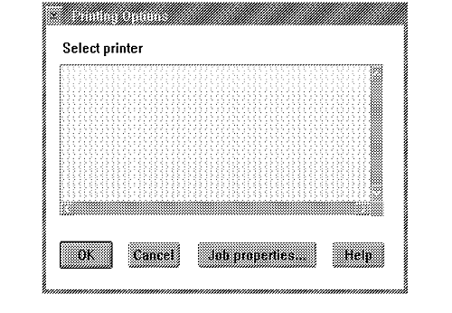

In a printer setup dialog, an application should offer a list of printer objects that are available to the user and enable the user to select one. (The list of printer objects actually is a list of queues.) If none are available, an appropriate message must be displayed. An application must query the list of available printer objects each time the printer setup dialog is displayed because the user might have created or modified the printer configuration while the application was executing. The following figure is an example of a printer setup dialog.
Application Printer Setup Dialog
Note: If the document was formatted for a particular device and the user selects a different printer, the application must ask the user's permission before reformatting the document for the new printer.
Use SplEnumQueue to query the list of printers (printer objects); printer objects essentially are spool queues. SplEnumQueue returns both a list of queues and information about each queue on the local workstation in an array of PRQINFO3 structures. It also returns information about local workstation queues that reference network print queues.
Because the number of queues might vary for each use of your application, it is essential to allocate sufficient storage to hold the data returned by SplEnumQueue. Usually the application issues the query twice: the first time, the application determines the necessary size of the information buffer; after allocating a memory block, the second query actually retrieves the information.
The SplEnumQueue parameter pcTotal contains the number of queues available on the local system. The application should display an appropriate message box if the value is 0.
The queue description (returned in the structure PRQINFO3 field name pszComment) is the printer object title. This is much more familiar to the user than the queue name, which is displayed only on the view settings page of a printer object. Therefore, the printer setup dialog should show the queue descriptions instead of the queue names.
SplEnumQueue returns information about the queue that might influence the user's or application's decision to print to this queue; for example, the queue priority, or the number of jobs already in the queue. SplEnumQueue also returns the default job properties for the queue. This data can be used by the application for the Job properties push button on the printer setup dialog.
Less sophisticated applications might decide to dispense with the printer setup dialog and just print to the default queue. The default queue can be queried using PrfQueryProfileString, with an application name of PM_SPOOLER and a keyname of QUEUE. The spooler function SplQueryQueue then can be called to retrieve the default job properties.